Keyboards, The Electronics Gateway Drug
Retrospective 2024-02-01I have generally made it a rule to never throw out a piece of technology, or send it to the recycling, without opening it up and attempting to repair it or at least take a look. As I know very little about electronics, this has lead to the blowing of quite a few fuses over the years as my half-assed tinkering did not a repair job make. Repeated failures lead me to title myself "bad with electronics" and this resulted in a sense of dread whenever I worked with them. This label decreases the effort put into the task, as rewards seem fleeting. The thing is, if I look at it objectively, I realize, I'm pretty good at many electronics' adjacent activities. I am currently typing this to the 5th computer I've ever built in my life. I have worked more than the last decade in software development. Yet, software is not hardware. What I actually needed was a hook into the electronics space. Something that could confidently generate a small reward for the effort it takes to understand the foundations of the field. This is a story about a process like that, where I cover my journey in building a device and all the theoretical and practical knowledge that comes as a result.
Enter the humble keyboard.
A keyboard is a beautiful device, it translates proprioception, the positioning of the body in space, into the symbols that can perform actions. On a typewriter, those symbols are used to make up the phenomes of our writing system. You can use them to communicate with others over great distance and time. On a computer, those symbols can do even more, they can provide general instructions for the machine to execute an array of diverse actions, be that through code or hotkeys or other mechanisms. I'll save you the rant about how you're able to type commands into a magic box made of sand and lightning and somehow it can understand those commands well enough to execute them. But the keyboard, one way or the other, is the quintessential operating device for that magick box.
 |
|---|
| Typing Magick in the Future |
Unfortunately, the majority of keyboards, due to decades of product decay, are hot garbage. A new keyboards is the epitome of our race to the bottom, with as much of the components scraped out as possible and its usability being a general afterthought for the manufacturers. The terrible and ubiquitous Dell keyboards that find their way into so many offices being the principle artefacts of this bottom.
But what does this have to do with electronics? A keyboard is a remarkably simple device. Like really simple. Thus, it provides a great inroad into understanding electronics for those of us who never found the talent. Plus, taking the time to understand and build one leaves you with a functional keyboard, which is a sizable win. So let's dig into how this works.
| 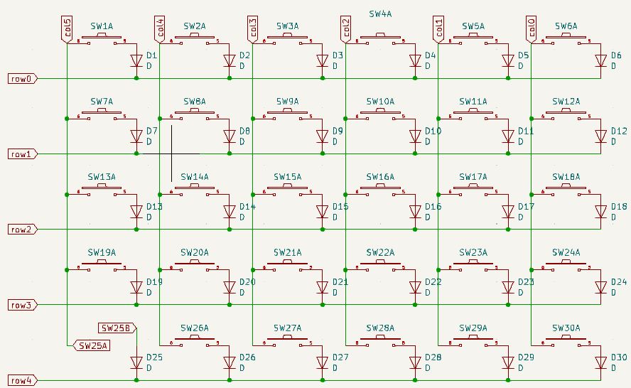 |
|---|
| Circuit Diagram of the Sofle Keyboard |
{kind=link}
Broadly speaking, a keyboard is essentially a collection of switches connected by a grid of circuits that all are routed to a number of pins of a tiny computer called a microcontroller. That microcontroller then sends signals to your larger computer using a driver, most of the time the Human Interface Driver (HID) that is used for sending keypress data to a machine.
| 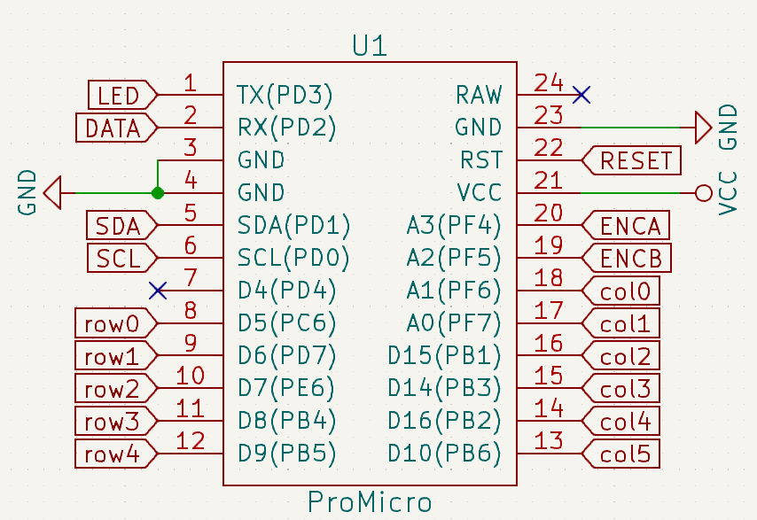 |
|---|
| Pro Micro is an Incredibly Common Microcontroller for Keyboards |
{kind=link}
The switches and grid of circuits are what enables a keyboard to detect a keypress. In most keyboards, each row and column is wired to a different pin, called a GPIO or General Purpose Input Output, on a microcontroller. To detect a keypress, a small voltage is run through the columns of this grid. Whenever a key is pressed, a column becomes temporarily connected to a row and both of the pins for that respective column and row register voltage. This shared voltage identifies which row and column have been pressed. It can be thought of as setting both row and column to True as we would in a computer.
This can be checked without a keyboard also, which becomes a handy troubleshooting technique while building one. Taking a piece of wire and connecting a row and column pins of a microcontroller connected to a PC will generate the correct character. For example, connecting pins 9 (row1) and 14 (col4) in the above ProMicro, will result in the letter "Q" being pressed on the computer (assuming a QWERTY layout).
| 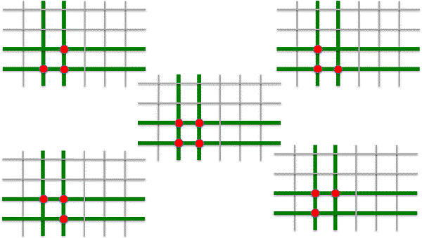 |
|---|
| Problematic Keypresses |
{kind=link}
If we think about this a bit further, we'll notice a limitation on this design. Specifically, certain types of keypresses involving multiple keys close together will generate connections that will not result in the unique row and column activation the microcontroller is expecting. Say we press three or four keys in the same area, like with a CTRL + SHIFT + Z hotkey. This results in multiple columns and rows being triggered simultaneously. As a result, the microcontroller has voltage in multiple rows and columns and cannot identify which key was pressed and simply does nothing. Alternatively, such a keypress can result in the wrong column and row being activated as current flows up the circuit in an unexpected way. These phenomena are commonly called "ghosting".
Most mechanical keyboards employ a diode around every switch to solve this problem. The diode is an electrical component that only allows current to flow in one direction. In the case of the grid of circuits, the introduction of a diode at every switch ensures that the current can only move in one direction on the board such as down and right. This prevents the ambiguity of multiple rows and columns being triggered as well as from current flowing in unexpected ways.
This is my very basic understanding of how a keyboard works. If you're interested in a far more detailed overview, I highly recommend this article by Michał Trybus, which covers the topic in substantially more detail. It covers all the bits I've abstracted away like how does a variable voltage lead to a True command anyway?
Okay, we got the theory, but how about the practice. Do we have to build one of these things from scratch? Should I start drawing circuit diagrams in KiCad and figure out how to get a printed circuit board made? Learn to hand wire a keyboard? Do I have to create the universe to make this apple pie?
No, you'll be fine.
There is, of course, nothing preventing you from doing all of this from scratch, but like for many hobby projects, these days there are kits are available that spare you the high theoretical learning curve and instead focus on building something that works and learning along the way.
My requirements for the project were straight-forward, I wanted a wireless split ortho-linear column stagger keyboard. Looking at it from the outside, I guess it probably doesn't sound so straight-forward, so let's break this requirement down.
| 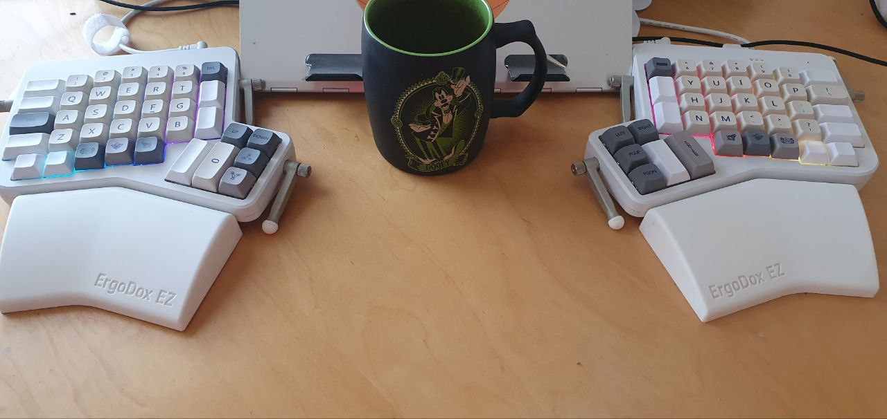 |
|---|
| Ergodox EZ with Goofy for Scale |
{kind=link}
I've been using ZMK's Ergodox EZ now for 4 years, and it's a wonderful keyboard but it's wired to my machine at home and it's massive. For this build, I wanted a keyboard to take on the road which carried with it the same features as the Ergodox. One of the central features of the Ergodox is the split. Rather than having a single keyboard, you have two halves that can be spread however you please. For those of you who haven't tried this before, the first thing you'll notice is how comfortable it is. Rather than curving yourself inward to meet the keys, contracting your middle back and tilting your arms inward, you can type in a natural posture.
| 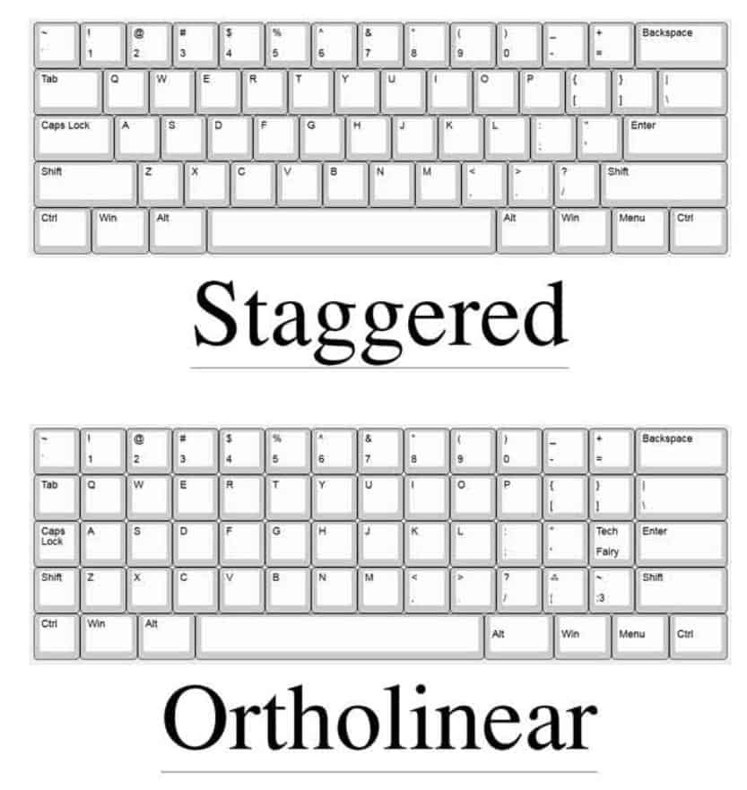 |
|---|
| Row Staggered Vs Ortholinear |
{kind=link}
The next requirement was ortho-linear with a column stagger. Most keyboards are row-staggered, this "feature" is mainly the result of needing to put levers between the keys of a typewriter. It may come as a shock to no one that the current array of keyboards do not, in fact, have levers between them. Yet, like many things in common use, are simply a product of technological accretion. Ortho-linear is a substantially more natural way for your hands to lay, with you only having to move your fingers up and down to reach your desired keys, as opposed to side to side. The column stagger makes that even easier by accounting for the relative length of the fingers on your hands, lowering the pinky letters because your pinky is shorter.
The last requirement was portability, the keyboard needed to be relatively small and be wireless. I say "relatively" small, because I still wanted number rows and a thumb cluster like I have in the Ergodox, so at minimum 58 keys. It should be noted that there is a wave of hobbyists that keep pushing the boundaries of how small you can get a keyboard, many arguing that 36-42 is enough. Some even going further. That said, I am not one of those people. I enjoy having too many keys and programming macros into many of the unused ones, so more is preferred. However, for the sake of portability, we'll leave it to 58.
There is an excellent tool for checking out the layouts of numerous keyboards, it even has a print feature that allows you to see how your hands would fit with the device. It allows you to explore different builds before making a choice. I eventually decided on a Sofle because compared to the other 58 key boards, it was the closest to the Ergodox in layout. Specifically, the modifier row had the most natural layout for me.
| 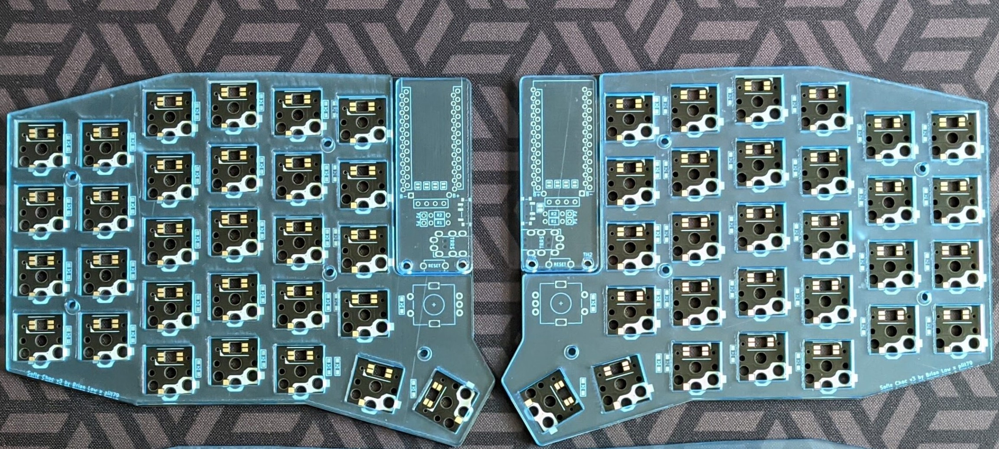 |
|---|
| Sofle V3 PCB by 42Keebs |
{kind=link}
After making a choice, I then went on the hunt for a build kit. Build kits come in various shapes and sizes but the general reason to get one is because they include all the parts you need to do this task. At this point in the process, I didn't know what a diode was or how a switch worked. I simply wanted all the parts and some clean instructions on how to put those parts together. I found a Czech company, 42Keebs, that provided a Sofle kit with all the required parts except the microcontroller, battery, the switches and key caps. The switches and key caps were items that seemed simple enough that I could safely buy them elsewhere without compatibility issues. I bought the switches, key caps and battery from vendors on AliExpress.
| 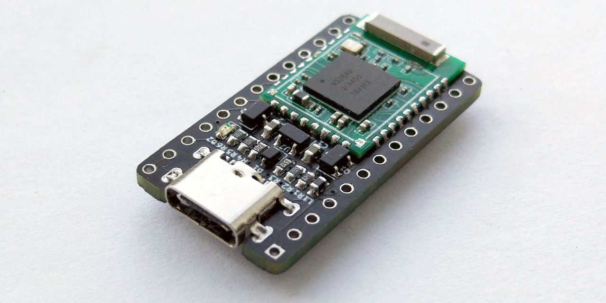 |
|---|
| The nRFMicro a Bluetooth compatible Microcontroller |
{kind=link}
The microcontroller was a bit more of a challenging choice. I wanted something that was Bluetooth compatible to aid in portability. There is a ton of microcontrollers that are cabled, essentially any microcontroller with enough GPIOs for the keyboard of choice is a suitable choice. Spark Fun's Pro Micro, and all of its derivatives, are especially popular choices among hobbyists, this has led to a degree of standardization, as microcontrollers can be "Pro Micro compatible" referring to the fact that they have the same shape, size and number of GPIOs. The PCB I bought from 42Keebs had the space for a Pro Micro compatible microcontroller. I needed something like that, except with Bluetooth for wireless. Fortunately, such a thing exists, in the form of the nRFMicro, an open source drop in replacement to the Pro Micro that is focused on Bluetooth connectivity that runs the ZMK firmware. Unfortunately, I was in no position to put together an nRFMicro by myself. A microcontroller is tiny, that's why micro is in the name, and contains a lot of components I wouldn't feel comfortable soldering at this point, let alone troubleshooting (that's my next project). So I had to look for an aftermarket solution. There are several options, the most notable are the nice!nano a European construction and the AliExpress Super nRFMicro. I eventually ended up purchasing the nice!nano for a single reason. The Super nRFMicro might be cheaper, but due to its construction, when it is put into sleep mode it drains exponentially more power than the nice!nano. I was already buying a not-so-large battery, so for me this was a deal breaker and worth the extra 10 euros to ensure the keyboard's battery wouldn't have to be charged more than once a week.
Choices were made, then it was just a matter of placing the orders and waiting for everything to arrive including the spark of creation. Opening the Sofle kit, the first reaction was one of immense dread. "Wow, these parts are sooo small, how does anyone work with this?" After the initial shock wares off, the need for the existence of magnification and tweezer technology becomes apparent.
| 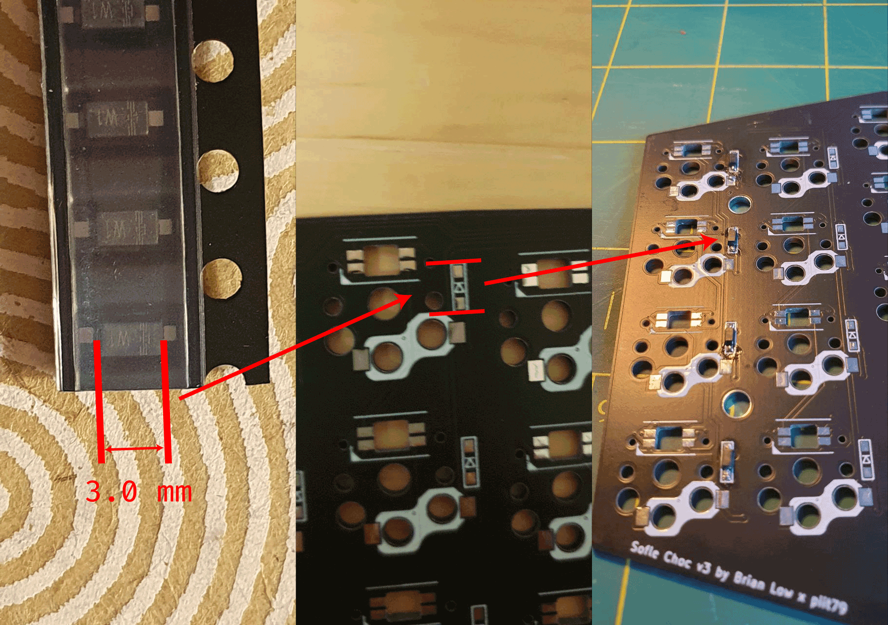 |
|---|
| Soldering The Per-Key Diodes |
{kind=link}
The construction was relatively straight-forward. The designer of the Sofle put together a wonderful build guide. The skill ceiling on the build guide was low, he went through each step carefully. I was going to follow most of it. However, the build guide was designed for a wired keyboard with an OLED screen, I had a wireless keyboard without any screen. This required a bit of adaptation.
| 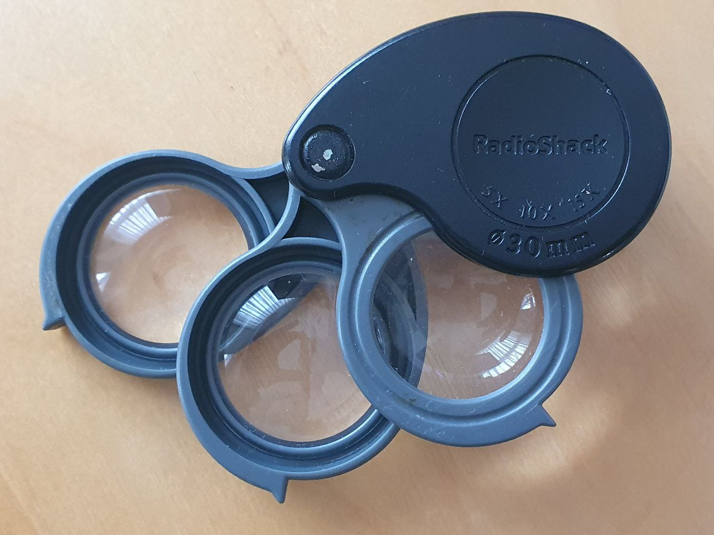 |
|---|
| The Godsend Radioshack magnifier given to me by my friend Justin |
{kind=link}
First, came the installation of the diodes on the back of the board. This was probably the most harrowing part of the whole experience, the diodes themselves are only 3.0 mm in size, which is smaller than anything I've had the pleasure to work with. It was also the first surface mounted components I have ever soldered. The diodes have a direction, marked by the vertical stripes along the top of the component. These have to be lined up with the arrow marker on the PCB. This is to ensure that all the diodes are set in the same direction. An old magnifier that my friend Justin left me was immensely useful here. Being far-sighted I could not make out any of the vertical stripes on the diodes without support.
| 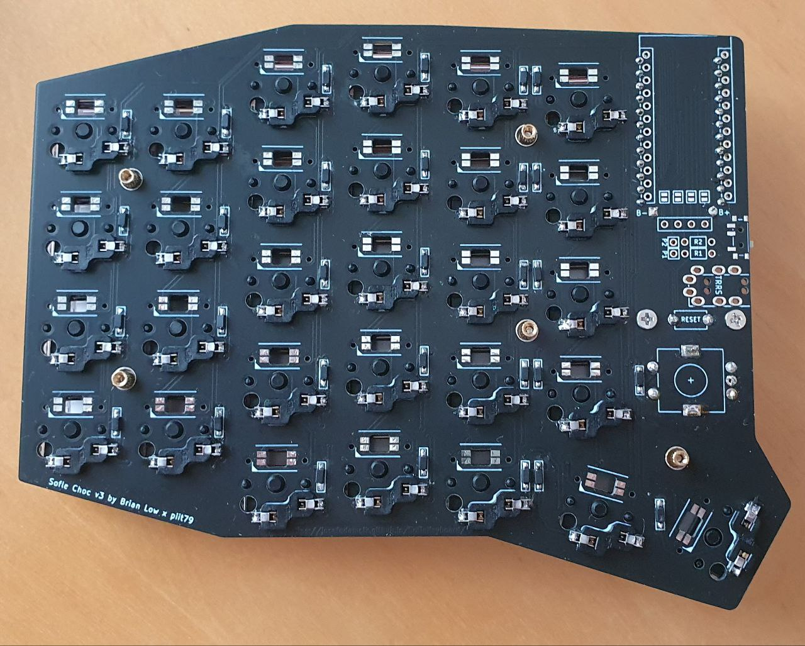 |
|---|
| Back of the Sofle with Completed Diodes and Hotswap Sockets |
{kind=link}
The hotswap sockets were installed next on the back of the board. This clever device allows you to insert a switch without soldering it down, allowing you to change the switches in the future if you want. I wasn't certain about the switches I selected so this was a nice feature. Compared to the diodes this was pretty easy, they are reasonably large and require a big glob of solder as they are under a degree of mechanical stress when you press a key.
After this a series of miscellaneous items needed to be installed, such as the rotary encoders, on-and-off switch and the battery that would sit beneath the microcontroller. The 42keebs version of the Sofle added an extra two pins below the microcontroller to the PCB so you wouldn't have to install the battery directly onto the microcontroller itself. This was a great boon, because I didn't want to put my soldering iron anywhere near the battery. Overall this stage was pretty easy, especially compared to the diodes.
| 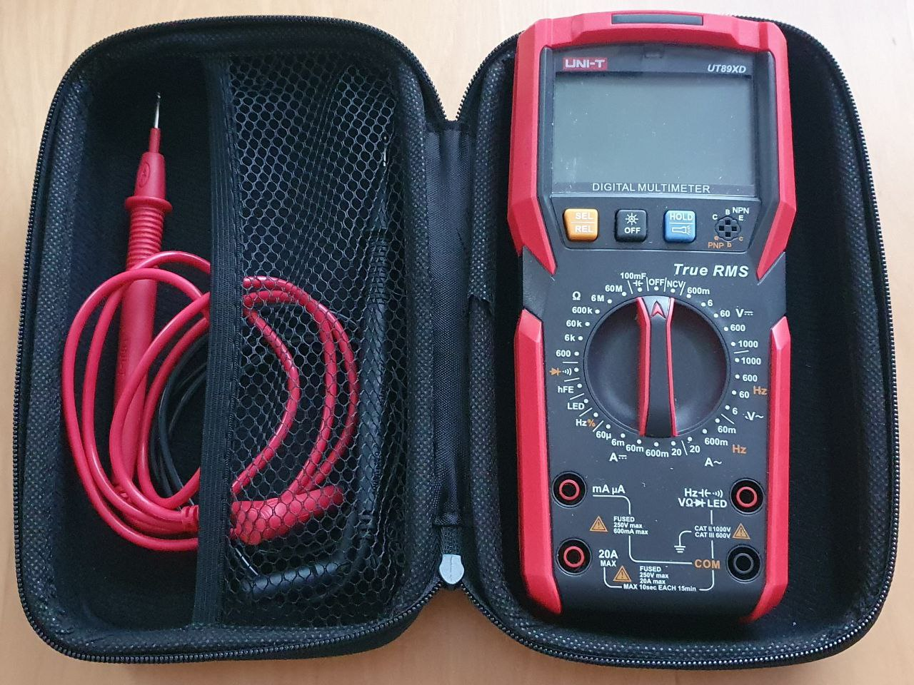 |
|---|
| Physical Unit Testing Hardware, the multmeter |
{kind=link}
Next came the testing to ensure everything was working correctly. I took a multimeter and checked each diode to ensure that current was flowing in the right direction and that the diode itself was seated correctly. This process was expedited by the fact that the PCB is reversible, I could use the pads for the diodes on the other side to check the connections. This process took a bit of time but I found several diodes and switches that were not soldered properly and was able to correct them before turning anything on. After checking the diodes, I checked the hotswap sockets with a switch to make sure that current was travelling through when pressed ensuring the socket was seated correctly.
The last physical installation element was the microcontroller. I soldered the pins into the PCB using a hotswap socket and then slid the microcontroller on top. I chose to initially not solder the microcontroller to the pins. I did this largely because the internet told me there is always a possibility of getting a broken microcontroller, and if that is the case, you will have to de-solder every one of the 24 pins, something I didn't want to have to do. So I figured I'd test that it worked correctly before soldering it down.
| 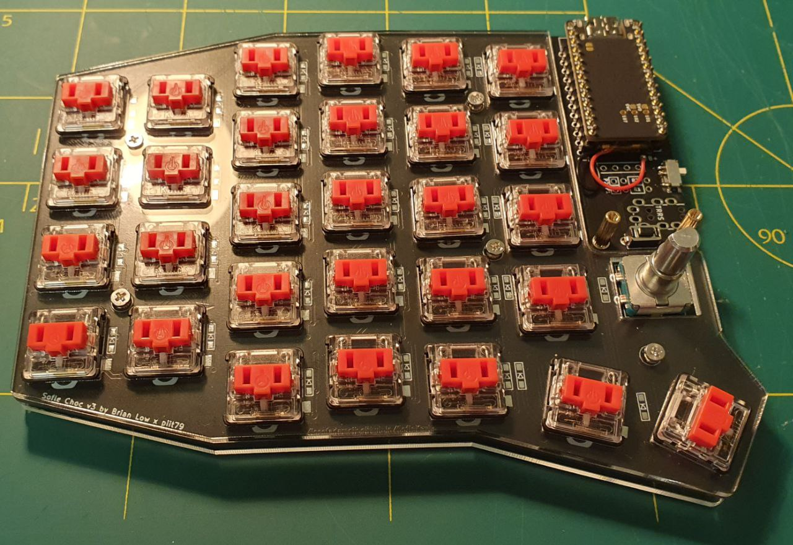 |
|---|
| Nearly completed Sofle with an unsoldered nice!nano |
{kind=link}
This may not have been the wisest decision. What I came to realize over the next couple of hours is that there is a reason we solder electrical elements rather than firmly pressing them against one another. Without solder and flux, the connection you have is tenuous. Oxidation on each component will act as a resistor between the two parts which can prevent current from flowing. Then there is always the more overt possibility that the two components are not as firmly in contact as we would would believe.
In any case, I slid the microcontroller on plugged in the USB-C into my computer and double clicked the reset switch to enable bootloader mode. Setting up the ZMK firmware for the Sofle with the nice!nano was remarkably easy. There is essentially a menu that you go through selecting the microprocessor and the keyboard model you are using. In bootloader mode, the keyboard appears as a USB connected device, and you copy the firmware and it automatically installs and restarts. This part of the process was totally painless, within 5 minutes I had a functioning keyboard.
| 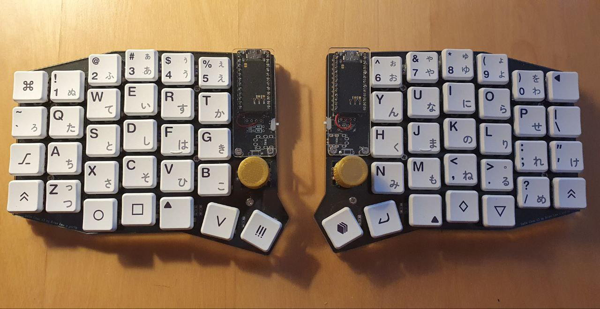 |
|---|
| The Complete Sofle |
{kind=link}
Or not entirely. The bootloader had worked, keypresses returned the corresponding letters you'd expect, but I was missing certain a row on the outer edge of the keyboard. "Damn, I must have missed something in my testing". So I went back and retested the diodes and switches on that row, everything was working fine as before. "Oh no, maybe the microcontroller is broken". This is where the trick of shorting two ends on the microcontroller with a wire came in handy, I was able to get the characters from the missing row, so the microcontroller isn't broken. I then tried swapping the two microcontrollers with one another and re-flashed the sides. Suddenly, a different row stopped working. It was at this moment I had brief glimpse of enlightenment. I wiggled the microcontroller in the pins until all of the keys worked. It seems placing it without solder was not enough to ensure a good connection all of the time. A bit of a run-around to troubleshoot, but a good lesson learned. Once I was sure everything was working, I soldered down the microcontroller so a good connection was made.
| 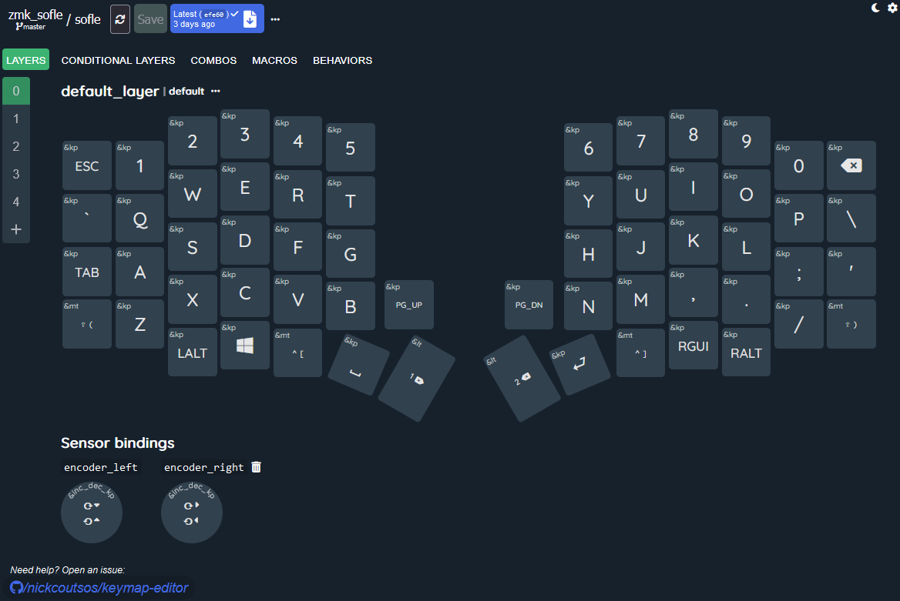 |
|---|
| Online ZMK editor |
{kind=link}
The last and ongoing step is to find the perfect layout for the new device. I wanted a layout that was very similar to what I was using on my Ergodox. Laying that out was pretty easy, there is a wonderful UI layout editor by Nick Coutsos that allows you to connect your github repo with the ZMK firmware to a visual editor. However, due to the reduction in keys, some alterations had to be made to make it work.
This whole thing was quite a journey. I feel like I understand electronics substantially more than I did before I started this process. I also have a wonderful portable split keyboard I can use to show for it. More importantly, I persisted and continued building even in the face of ambiguity and uncertainty. Falling back on reasonably processes to troubleshoot where I was and continue forward in the build. I am not sure what I'm going to do with this new skillset. I think the next project will be to build an nRFmicro from scratch and see how that operates with the hope that it might give more understanding about both electronics but also the relationship between computation and electronics.
Tags: Keyboards Electronics